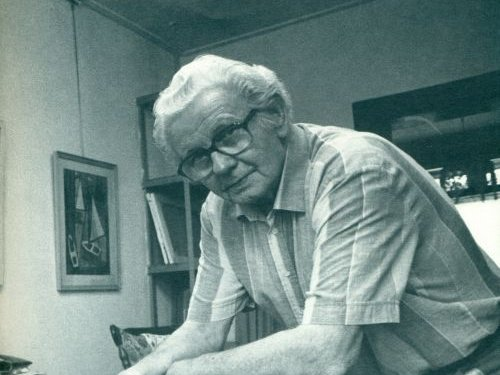

Inleiding

Klaas Bernink was een Enschedese schilder die met een scherp oog keek naar de stad om hem heen. Hij werd bekend door zijn heldere, bijna grafische manier van werken. In plaats van drukke details koos hij voor rustige vormen, strakke lijnen en grote kleurvlakken. Daardoor krijgen zijn schilderijen een duidelijke structuur en een bijna tijdloze uitstraling. Bernink vond inspiratie in alledaagse plekken: fabrieken, straten, gebouwen en machines. Hij zag schoonheid in vormen die anderen vaak voorbijliepen. Een trapgevel, een toren, een machineonderdeel – in zijn werk worden ze eenvoudige, krachtige beelden. Hij abstraheerde de werkelijkheid, maar bleef altijd herkenbaar. Zijn schilderijen tonen niet alleen wat er stond, maar ook hoe het voelde: ordelijk, helder en stevig geworteld in Twente. Veel van zijn onderwerpen zijn inmiddels verdwenen of veranderd. Juist daarom zijn zijn schilderijen waardevolle herinneringen aan het Enschede van de twintigste eeuw. Ze laten zien hoe de stad groeide, vernieuwde en soms ook verloor. Bernink schilderde geen romantische stadsgezichten, maar eerlijke portretten van plekken met karakter. Zijn werk vormt een visueel archief van een stad in beweging – vastgelegd met aandacht, eenvoud en een groot gevoel voor vorm.